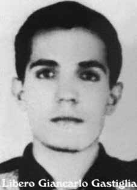

Líbero
Giancarlo
Castiglia
CIRCUNSTÂNCIAS DA MORTE
Segundo o Relatório Arroyo, Líbero Giancarlo Castiglia era uma das quinze pessoas que se encontravam no acampamento da Comissão Militar na hora do ataque das Forças Armadas ocorrido em 25 de dezembro de 1973, episódio conhecido como “Chafurdo de Natal”. Não existem outras informações disponíveis em documentos oficiais sobre o desaparecimento de Líbero. Os relatórios militares de 1993, entregues ao ministro da Justiça Maurício Corrêa não fazem menção à Libero e os depoimentos prestados à Comissão Nacional da Verdade (CNV) pelo sargento Santa Cruz e pelo segundo tenente da Polícia Militar de Goiás, João Alves de Souza, não citam seu nome dentre os que teriam morrido no evento do dia 25 de dezembro de 1973. Em reportagem do Estado de São Paulo de 24 de agosto de 2003, o barqueiro Otacílio Alves de Miranda afirmou que foi informado sobre a morte de Líbero na fazenda São Sebastião, em Piçarra, no sudeste do Pará.
According to the Arroyo Report, Líbero Giancarlo Castiglia was one of fifteen people who were at the Military Commission camp at the time of the Armed Forces attack that took place on December 25, 1973, an episode known as “Christmas Wallowing”. There is no other information available in official documents about Líbero's disappearance. The 1993 military reports, delivered to the Minister of Justice Maurício Corrêa, make no mention of Libero and the statements given to the National Truth Commission (CNV) by Sergeant Santa Cruz and the second lieutenant of the Military Police of Goiás, João Alves de Souza, do not mention his name among those who would have died in the event on December 25, 1973. In a report by the State of São Paulo on August 24, 2003, the Boatman Otacílio Alves de Miranda stated that he was informed about Líbero's death on the São Sebastião farm, in Piçarra, in the southeast of Pará.
Según el Informe Arroyo, Líbero Giancarlo Castiglia fue una de las quince personas que se encontraban en el campamento de la Comisión Militar al momento del ataque de las Fuerzas Armadas ocurrido el 25 de diciembre de 1973, episodio conocido como “Revuelco de Navidad”. No hay otra información disponible en documentos oficiales sobre la desaparición de Líbero. Los informes militares de 1993, entregados al Ministro de Justicia Maurício Corrêa, no mencionan a Libero y las declaraciones dadas a la Comisión Nacional de la Verdad (CNV) por el sargento Santa Cruz y el segundo teniente de la Policía Militar de Goiás, João Alves de Souza, no mencionan su nombre entre los que habrían muerto en el suceso del 25 de diciembre de 1973. En un informe del Estado de São Paulo del 24 de agosto, En 2003, el barquero Otacílio Alves de Miranda afirmó haber sido informado de la muerte de Líbero en la hacienda São Sebastião, en Piçarra, en el sureste de Pará.